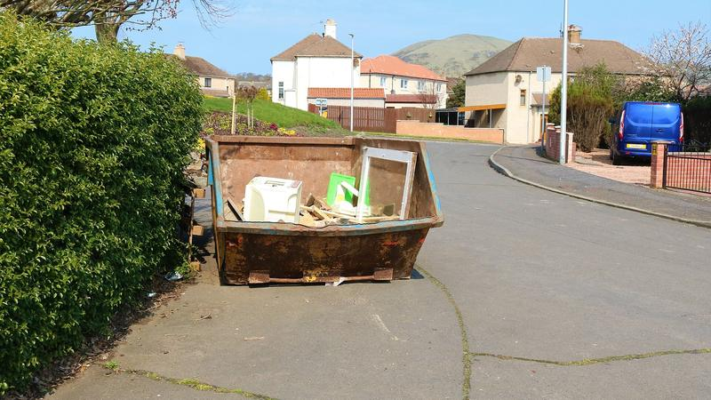

Slough and Langley
6 licence-checked firms, Chalvey tip and Slough skip permits.
See licensed firms
Independent UK directory
Skip hire, skip bags and rubbish clearance from firms we have checked on the official Environment Agency register, plus your council’s rules in plain English.
Photo: Bill Kasman, CC BY-SA 2.0, via Wikimedia Commons (cropped and resized). All photo credits
This is a small, growing directory: practical guides, a skip size guide, and local pages for Slough, Langley, Windsor, Maidenhead, Staines-upon-Thames and Uxbridge. We only list businesses we have checked on the official Environment Agency register.
6 licence-checked firms, Chalvey tip and Slough skip permits.
See licensed firms5 licence-checked firms, RBWM skip licence fees and Stafferton Way tip.
See licensed firms
5 licence-checked firms, plus what Stafferton Way tip will take.
See licensed firms
5 licence-checked firms, Surrey’s £139 skip licence and Shepperton tip.
See licensed firms
5 licence-checked firms, Hillingdon’s £90 permit and Harefield tip.
See licensed firmsStart with the job, not the price. Whichever you choose, check the firm is a registered upper-tier waste carrier.
Building work and mixed waste you will fill over several days. Needs a council permit if it goes on the road.
Choose a skip sizeSmaller or slower jobs where you fill a bag on the driveway and have it lifted away later.
Compare the optionsOne-off house, loft or garden clearances, or when there is no room to leave a container.
When a van makes senseBin-bag counts are the figures local firms publish. Heavy waste such as soil and rubble needs a smaller skip.
Midi
30–40 bags
OK for soil & rubble
Builder’s
50–60 bags
OK for soil & rubble
Builder’s
60–80 bags
OK for soil & rubble
Maxi
80–100 bags
Light waste only
Maxi
100–120 bags
Light waste only
If you pay someone to remove household waste in England, you must take reasonable steps to make sure they are allowed to take it. A two-minute check on the official register is the simplest way to do that.
Start with a useful page, not a sales pitch.
The 2-minute check that keeps you on the right side of the law.
Read the guideWhich one suits your job, your drive and your budget.
Read the guide4 to 12 yards, how many bin bags each holds, and skip bags.
Read the guideAsbestos, fridges, tyres, mattresses and more, and where they go instead.
Read the guideRoad, pavement or verge? Who applies and what each council charges.
Read the guide